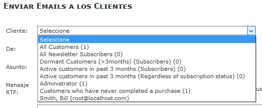
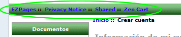

Work in progress - CAVEAT EMPTOR
This fileset is only intended to allow pre-release testing of Zen Cart Develop/1.6 pre-alpha with a second language containing multibyte strings.
New (for 1.6) files have been translated.
-----------------
GPL Licence
Collator-Translator-Maintainer: torvista
As always, install and install any modifications on a development site, NEVER on your production site.
a) The fileset is encoded in utf-8 as Zen Cart uses utf-8 encoding from v1.5 onwards.
If you have an older site that still uses latin-1/8859 for the database contents/connection and html page encoding either you have to convert the database to utf-8 or convert the language files to 8859. This will be difficult as there are various free programs available for bulk 8859->utf-8 recoding but not utf-8->8859.
I recommend you upgrade the database to utf-8. There are multiple threads on this subject in the Zen Cart forum but as of 2012-12 no script has yet been confirmed by the Zen Cart team as being 100% risk-free.
If you do not have a customised template or have been modifying the "classic" template: STOP NOW, create your own template and restore the "classic" files to their original states.
The "classic" template should be left untouched to help investigate/isolate any problems you create/introduce into the code with your customised template files.
If you have not installed the Backup MYSQL Plugin to provide easy database backups, do it now.
http://www.zen-cart.com/downloads.php?do=file&id=7
c) in the folder /extras is a utility "find_locales.php" that can help you identify the locales available on your server and so use the correct ones in the spanish.php files if the ones included by default do not correspond.
USAGE INSTRUCTIONS:
* 1. Open your browser
* 2. Enter the URL for your store, followed by /extras/find_locales.php
* 3. ... and press Enter
Click on "new language" and fill in the fields:
Name: This is a text field so can be anything eg: Español/Spanish/Castellano. It can be changed anytime.
Code: es
Directory: spanish
Sort Order: Optional. This determines the display order of the language selection drop-down in the admin menu and the display order of the flags in the shop front.
Set as default: tick if you want the admin to display in spanish when you login.
Click on "Insert".
If you get any warnings at this point MAKE A NOTE OF THEM/ take a screenshot and fix the problem: Google is your friend or report it back to the maintainer.
Note that the text of the options of configuration settings can be stored in the database in one language only, and so are only available in english.
Also in
Admin->Herramientas->Enviar Correo and
Admin->Vales de Compra/Cupones->Enviar por correo Vale de Compra
the drop-down texts are hard-coded in the database query_builder table.

They can be manually modified if necessary.
Note that the sidebox to display the available languages is not enabled by default.
Enable it in Tools->Layout Boxes Controller
These are not multi-language in a new Zen Cart installation: you have to install a plugin.
So this is normal:

Copy the new files from the development to the production site and repeat step 3)
Note that the order status titles (Admin->Localization->Order Status) will need to be manually translated in addition to all products and categories.
If any text is untranslated/incorrect or could be improved, please post a message in the forum thread.
If you see a constant name appear like "TEXT_CUSTOM_ENTRY" instead of text, that means the constant has not been defined for the currently-selected language.
Check that this constant is not something that is part of a plugin you have added and so will probably not have definitions for spanish.
If this is the case you have to find the define TEXT_CUSTOM_ENTRY in the english fileset and create an identical define in a corresponding spanish file.
If you get white pages: check the debug log in the /logs directory and use this page to help you locate the fault: http://www.zen-cart.com/content.php?124-blank-page.
The spanish button images for the classic template were created with the Zen Button Construction Kit:
http://www.zen-cart.com/downloads.php?do=file&id=520
Note the text used for CSS buttons comes from the ALT definitions.
In the case of submit buttons there is a 30 character limit hard-coded into zen_image_submit. If this is exceeded the normal image is shown instead.
This may be useful if you wish to force the use of an image on a particular submit button: just use a 30+ character alt text!
Please help to maintain and improve this translation by sending comments and corrections in the forum:
http://www.zen-cart.com/showthread.php?193098-Spanish-Language-Pack
A translation of this readme file would also be welcome!